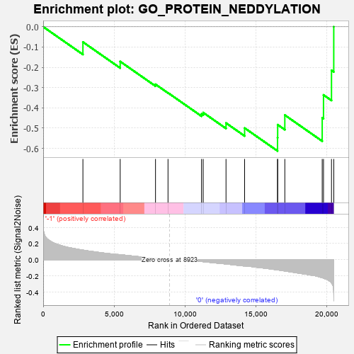
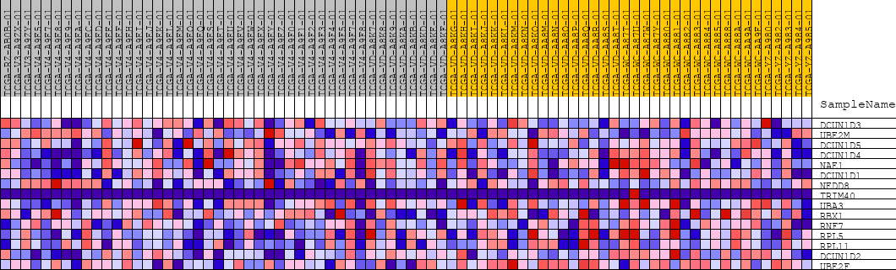
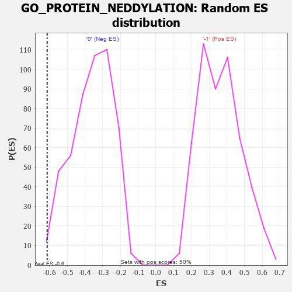

| | | Dataset | GSEAExpression.phenotype_uvm.cls#-1_versus_0 |
| Phenotype | phenotype_uvm.cls#-1_versus_0 |
| Upregulated in class | 0 |
| GeneSet | GO_PROTEIN_NEDDYLATION |
| Enrichment Score (ES) | -0.6129814 |
| Normalized Enrichment Score (NES) | -1.6945097 |
| Nominal p-value | 0.010080645 |
| FDR q-value | 1.0 |
| FWER p-Value | 0.973 |
Table: GSEA Results Summary

Fig 1: Enrichment plot: GO_PROTEIN_NEDDYLATION
Profile of the Running ES Score & Positions of GeneSet Members on the Rank Ordered List
| PROBE | DESCRIPTION
(from dataset) | GENE SYMBOL | GENE_TITLE | RANK IN GENE LIST | RANK METRIC SCORE | RUNNING ES | CORE ENRICHMENT | | 1 | DCUN1D3 | na | | | 2805 | 0.118 | -0.0753 | No |
| 2 | UBE2M | na | | | 5437 | 0.062 | -0.1714 | No |
| 3 | DCUN1D5 | na | | | 7930 | 0.017 | -0.2840 | No |
| 4 | DCUN1D4 | na | | | 8813 | 0.002 | -0.3261 | No |
| 5 | NAE1 | na | | | 11180 | -0.022 | -0.4302 | No |
| 6 | DCUN1D1 | na | | | 11298 | -0.024 | -0.4236 | No |
| 7 | NEDD8 | na | | | 12908 | -0.052 | -0.4750 | No |
| 8 | TRIM40 | na | | | 14221 | -0.076 | -0.4997 | No |
| 9 | UBA3 | na | | | 16545 | -0.125 | -0.5480 | Yes |
| 10 | RBX1 | na | | | 16555 | -0.125 | -0.4833 | Yes |
| 11 | RNF7 | na | | | 17060 | -0.139 | -0.4359 | Yes |
| 12 | RPL5 | na | | | 19699 | -0.221 | -0.4496 | Yes |
| 13 | RPL11 | na | | | 19791 | -0.227 | -0.3363 | Yes |
| 14 | DCUN1D2 | na | | | 20355 | -0.286 | -0.2154 | Yes |
| 15 | UBE2F | na | | | 20515 | -0.430 | 0.0001 | Yes |
Table: GSEA details [plain text format]

Fig 2: GO_PROTEIN_NEDDYLATION
Blue-Pink O' Gram in the Space of the Analyzed GeneSet

Fig 3: GO_PROTEIN_NEDDYLATION: Random ES distribution
Gene set null distribution of ES for GO_PROTEIN_NEDDYLATION